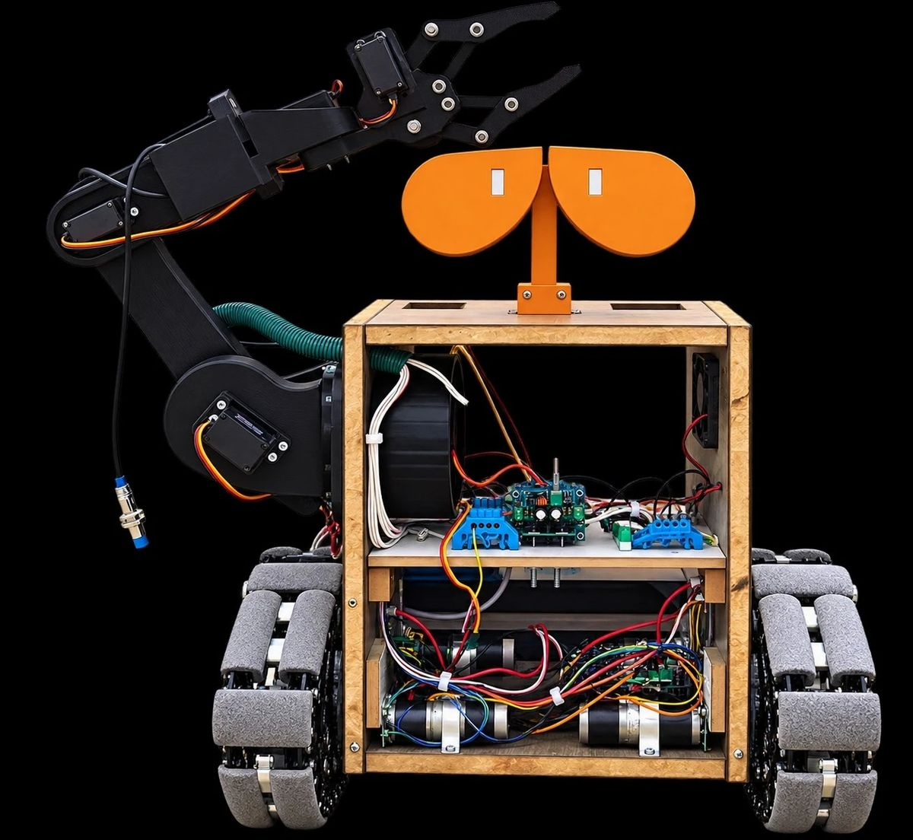
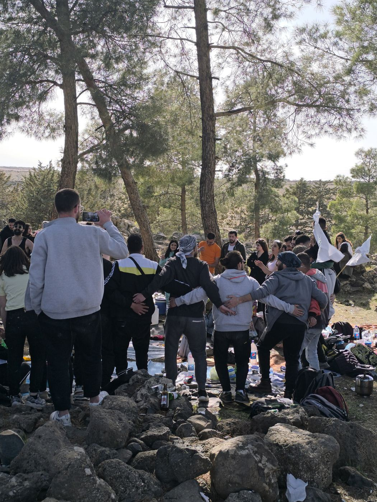
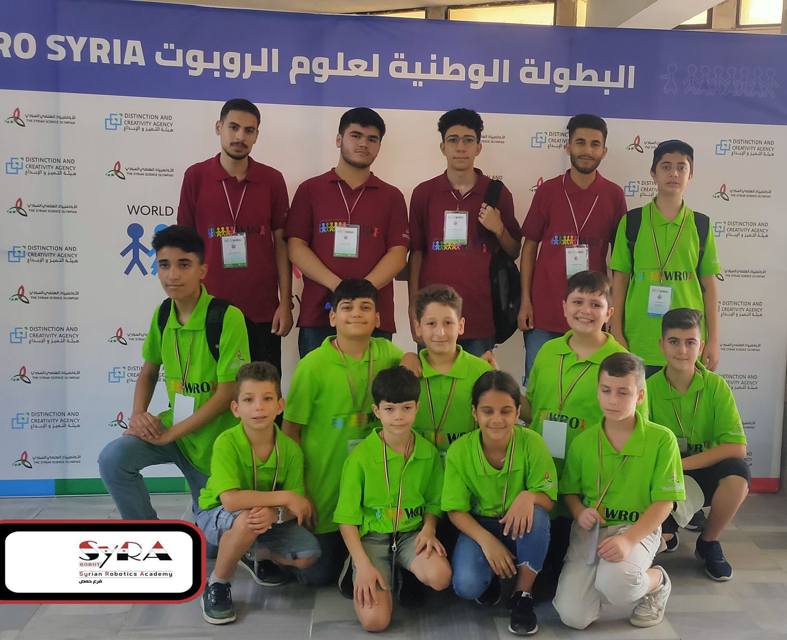
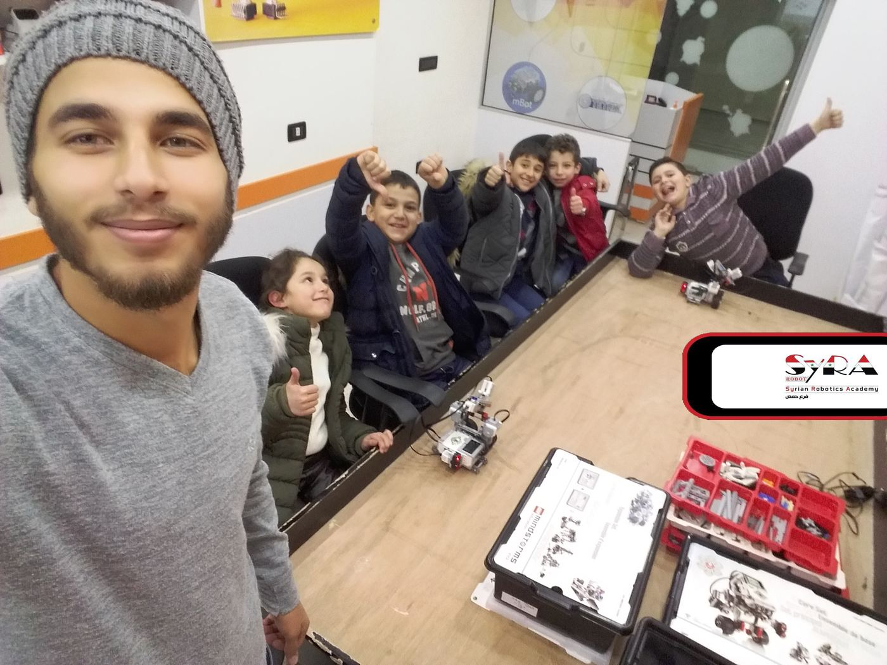
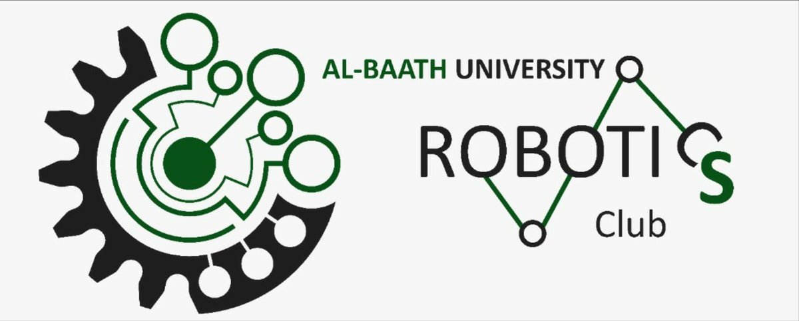
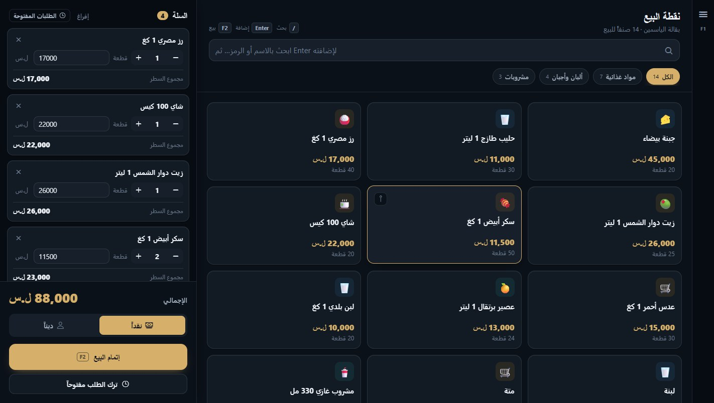
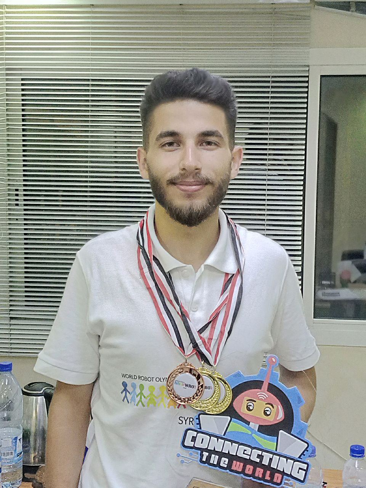

Mechatronics Engineer · Robotics Trainerمهندس ميكاترونيكس · مدرّب روبوتيك
WardAlkhatibوردالخطيب
Building robots and the teams that build themأبني الروبوتات والفرق التي تصنعها
Meet WALL-E Junior, the graduation project I built with a team of four: an autonomous tracked robot that finds waste, sorts it into plastic, paper, metal or glass with a YOLOv8 model, and places it in the right bin with a 5-DOF arm. My part was the computer vision and the SolidWorks design of the arm and the robot. Before it, I spent four years teaching robotics in Homs and coached Team H2A to silver at the WRO 2023 International Final. تعرّف على WALL-E Junior، مشروع التخرج الذي بنيته مع فريق من أربعة طلاب: روبوت ذاتي القيادة على جنازير يعثر على النفايات، ويصنّفها إلى بلاستيك وورق ومعدن وزجاج بنموذج YOLOv8، ثم يضعها في الحاوية الصحيحة بذراع خماسية درجات الحرية. وكان دوري الرؤية الحاسوبية وتصميم الذراع والروبوت على SolidWorks. وقبله أمضيتُ أربع سنوات أدرّب على الروبوتيك في حمص، وأشرفتُ على فريق H2A حتى نال الفضية في النهائي الدولي WRO 2023.

Drag to turn it. Move the cursor and the arm reaches for it.اسحبه ليدور، وحرّك المؤشر لتمتد الذراع نحوه. Drag to turn it, tap it to say hi.اسحبه ليدور، والمسه ليلوّح لك.
Areas of workمجالات عملي
What I work onما أعمل عليه

2025 – now2025 – الآن Community workالعمل المجتمعي Co-founder of a 300-member youth initiative serving Al-Qurayya.شريك مؤسس لمبادرة شبابية من 300 عضو تخدم بلدة القريّا.
2020 – 20242020 – 2024 Competition coachingتدريب فرق المسابقات Ten medals with my teams since 2020, including gold at WRO Syria 2023 and silver at the world final.عشر ميداليات مع فرقي منذ 2020، منها ذهبية WRO سوريا 2023 وفضية النهائي العالمي.
2020 – 20242020 – 2024 Teaching and coursesالتعليم والكورسات Robotics and programming for ages 6–18 at three institutions in Homs.روبوتيك وبرمجة للأعمار 6–18 في ثلاث مؤسسات في حمص. 2025 – 20262025 – 2026 Graduation projectمشروع التخرج WALL-E Junior, an autonomous waste-sorting robot. In testing it classified 19 of 20 items correctly.WALL-E Junior، روبوت ذاتي القيادة لفرز النفايات. في الاختبار صنّف 19 قطعة من 20 تصنيفاً صحيحاً.
2018 – 20262018 – 2026 University projectsالمشاريع الجامعية Control-systems projects in MATLAB/Simulink, my graduation robot and the Robotics Club.مشاريع أنظمة تحكم على MATLAB/Simulink، وروبوت التخرج، ونادي الروبوتيك.
Softwareبرمجيات Side projectsالمشاريع الجانبية ROZE, an Arabic point-of-sale and accounting app I build and sell to shops.ROZE، برنامج نقاط بيع ومحاسبة عربي أبنيه وأبيعه للمحلات.
2020 – 20262020 – 2026 Achievements and awardsالإنجازات والجوائز Ten medals as a coach since 2020, and a Sumo podium sweep in 2024.عشر ميداليات بصفتي مدرّباً منذ 2020، ومنصة سومو كاملة في 2024. Contactتواصل Work with meلنعمل معاً Robotics training, engineering projects or community collaboration.تدريب روبوتيك، أو مشاريع هندسية، أو تعاون مجتمعي.Profileنبذة
Engineering, taught by handهندسة تُعلَّم باليد
I graduated in Mechatronics, Robotics and Automation Engineering from Homs University in 2026, and most of my work sits where engineering meets teaching. I have designed robotics curricula by age group, led mechanical design and 3D printing for competition robots, and supervised teams from their first lesson to a world final. Since 2025 I have brought the same habits of structure, data and teamwork to community work. تخرّجتُ في هندسة الميكاترونيكس والروبوتيك والأتمتة من جامعة حمص عام 2026، ويقع معظم عملي حيث تلتقي الهندسة بالتعليم. صمّمتُ مناهج روبوتيك مقسّمة حسب الفئات العمرية، وقُدتُ التصميم الميكانيكي والطباعة ثلاثية الأبعاد لروبوتات المسابقات، وأشرفتُ على فرق من أول درس حتى النهائي العالمي. ومنذ 2025 أنقل العادات نفسها، من التنظيم والبيانات والعمل الجماعي، إلى العمل المجتمعي.
Engineeringالهندسة
Mechanical design in SolidWorks, 3D printing and fabrication, and Arduino-based electronics with sensors and motor control.تصميم ميكانيكي على SolidWorks، وطباعة ثلاثية الأبعاد وتصنيع، وإلكترونيات مبنية على Arduino مع الحساسات والتحكم بالمحركات.
Educationالتعليم
Hands-on robotics and programming for ages 6–18, with inclusive approaches for children with special needs, including children on the autism spectrum.تعليم عملي للروبوتيك والبرمجة للأعمار من 6 إلى 18 سنة، مع أساليب دامجة للأطفال من ذوي الاحتياجات الخاصة، ومنهم أطفال طيف التوحد.
Communityالمجتمع
Co-founder of a 300-member youth initiative: a town-wide database, digital archiving, feasibility studies and public programs.شريك مؤسس لمبادرة شبابية من 300 عضو: قاعدة بيانات على مستوى البلدة، وأرشفة رقمية، ودراسات جدوى، وبرامج للأهالي.
Toolkitالأدوات والمهارات
Bill of materialsقائمة المكوّنات
| Itemالبند | Areaالمجال | Componentsالمكوّنات |
|---|---|---|
| 01 | CAD & mechanical designالتصميم الميكانيكي | SolidWorks · CAD modelling · design optimizationالنمذجة · تحسين التصميم |
| 02 | Fabricationالتصنيع | 3D printing · mechanical assemblyالطباعة ثلاثية الأبعاد · التجميع الميكانيكي |
| 03 | Electronicsالإلكترونيات | Arduino · sensors · motor control · circuit designالحساسات · التحكم بالمحركات · تصميم الدارات |
| 04 | Programmingالبرمجة | Arduino programming · Scratch · block-based codingبرمجة Arduino · Scratch · البرمجة بالكتل |
| 05 | Computer visionالرؤية الحاسوبية | YOLOv8 · Ultralytics · Python · deployment on Raspberry Pi 5التشغيل على Raspberry Pi 5 |
| 06 | Control and simulationالتحكم والمحاكاة | MATLAB · Simulink · PID · MPPT · system modellingنمذجة الأنظمة |
| 07 | Educational roboticsالروبوتات التعليمية | LEGO EV3 · LEGO SPIKE Prime · Edison · mBot · Codey Rocky |
| 08 | Teachingالتعليم | Curriculum design · competition coaching · inclusive educationتصميم المناهج · تدريب فرق المسابقات · التعليم الدامج |
| 09 | Leadershipالقيادة | Team leadership · project coordination · community developmentقيادة الفرق · تنسيق المشاريع · التنمية المجتمعية |
| 10 | Data & planningالبيانات والتخطيط | Database development · digital archiving · feasibility studiesبناء قواعد البيانات · الأرشفة الرقمية · دراسات الجدوى |
Contactتواصل
Let's build somethingلنبنِ شيئاً معاً
For robotics training, engineering projects or community collaboration, reach me here.للتدريب على الروبوتيك أو المشاريع الهندسية أو التعاون المجتمعي، تواصل معي هنا.